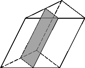

Задание1:
Решите уравнение:
log_2(7х-4) = 2 + log_2(13)
Задание2:
Увеличение емкости конденсатора колебательного контура вызывает:
Задание3:
Через среднюю линию основания треугольной призмы, объем которой равен 32, проведена плоскость, параллельная боковому ребру.
Найдите объем отсеченной треугольной призмы.

Задание4:
К субъектам социального партнерства не относятся:
Задание5:
Влияет ли степень инвалидности на размер трудовой пенсии по инвалидности:
Задание6:
Высоким удельным электрическим сопротивлением обладают:
Задание7:
Руководитель предприятия в обязательном порядке обязан назначить ответственных:
Задание8:
Денежная реформа в России была проведена в:
Задание9:
Первая трамвайная линия в Москве была введена в действие в:
Задание10:
Бактрии рода Salmonella являются возбудителями: